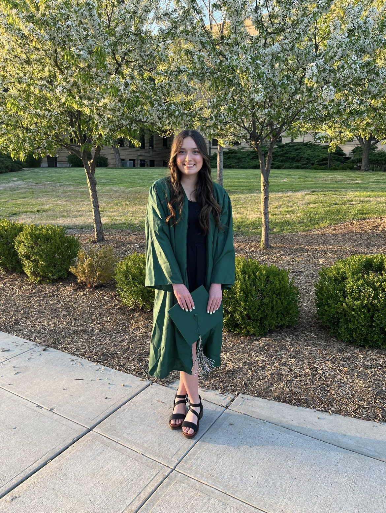

High School
High school was a transformative period where I learned essential skills such as discipline, time management, and effective communication. Engaging in a diverse range of subjects and extracurricular activities allowed me to explore various interests, ultimately helping me identify my passions and strengths.
Through group projects and leadership roles, I honed my teamwork and leadership abilities, understanding the importance of collaboration and the value of diverse perspectives. The challenges I encountered, both academic and personal, taught me resilience and adaptability, reinforcing the significance of perseverance and a positive attitude in overcoming obstacles.
Driven by a deep appreciation for the power of education and a desire to further my academic journey, I decided to take the initiative to graduate high school a year early. This decision required meticulous planning, a strong work ethic, and an unwavering commitment to my goals. Balancing an increased course load with my other responsibilities was challenging, but it strengthened my organizational and problem-solving skills. This experience underscored my commitment to lifelong learning and set the foundation for my continued academic and personal growth.
College
During my first year of college, taking general education classes provided a comprehensive foundation of knowledge and skills that were instrumental in shaping my academic journey. These diverse courses, ranging from humanities to sciences, enhanced my critical thinking, communication, and problem-solving abilities. They taught me the importance of a well-rounded education and the interconnectedness of different fields.
My dedication to studying and commitment to academic excellence paid off, as I earned A's in all my classes, got an academic scholorship, and made the Dean's List. This achievement not only bolstered my confidence but also underscored my ability to excel in a rigorous academic environment, reinforcing my drive to pursue my educational and career goals with determination and focus.